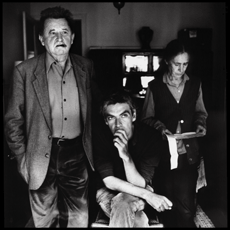

|
6 BAGATELAS (6 Bagatelles)
Pedro Costa | F, P 2001 | 18 Min.
Format: Beta SP
Material: Betacam
Originalsprache: Französisch
Kamera: Pedro Costa
Schnitt: Pedro Costa
Mit Danièle Huillet, Jean-Marie Straub
Produktion: Contracosta Produções
Sechs Outtakes aus dem filmischen Porträt "Où gît votre sourire enfoui?" sind die sechs "Bagatellen" über das Cineasten-Paar Danièle Huillet und Jean-Marie Straub. Bewusst hält Costa den Ansatz niedrig, zeigt Alltäglichkeiten aus ihrem Zusammenleben. Es sind wertvolle Kleinigkeiten, musikalische Bagatellen, die sich zu einer einzigartigen Filmkomposition zusammenfügen.
"Fünf Fragmente sind innen gedreht, während das sechste und längste im Freien, in häuslicher Umgebung, spielt. Während Jean-Marie Straub redet und argumentiert, hängt Danièle Huillet Wäsche auf und macht Näharbeiten – hört aber äußerst aufmerksam zu, kommentiert und ergänzt Straubs Rede, initiiert auch mal einen Disput. Reales Donnergrollen ist unter Straubs Ausführungen zu hören und leitet über zum wie leichthin nachgesetzten Wortegrollen, ob denn die Wäsche nicht schon trocken sei und von der Leine genommen werden könnte … Doch sie bleibt hängen, der Welt ausgesetzt." - Johannes Beringer, New Filmkritik
Pedro Costa, geb. 1959 in Lissabon. Studiert Regie und Schnitt an der Filmhochschule von Lissabon und arbeitet als Regieassistent bei verschiedenen Produktionen. Dreht im Alter von 30 Jahren seinen ersten Film und gilt seither als radikalster und eigenwilligster Filmemachern seiner Generation. Mit "Casa de lava" beginnt seine Auseinandersetzung mit den gesellschaftlich Ausgestoßenen und den Capverdischen Einwanderern im Lissaboner Armenviertel Fontainhas seines "Vanda-Zyklus'".
Filme: O sangue 1990 | Casa de lava 1994 | Ossos 1997 | No quarto da Vanda 2000 | Où gît votre sourire enfoui? 2001 | 6 Bagatelas (2001 | Ne change rien 2005 Juventude em marcha 2006
zurück
|